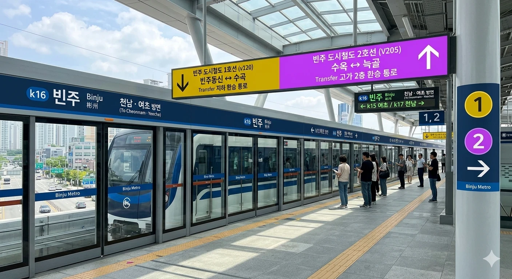
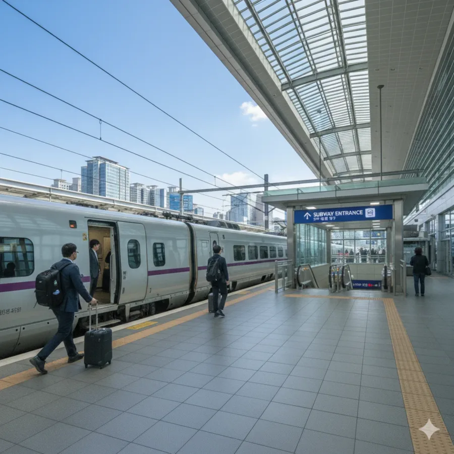
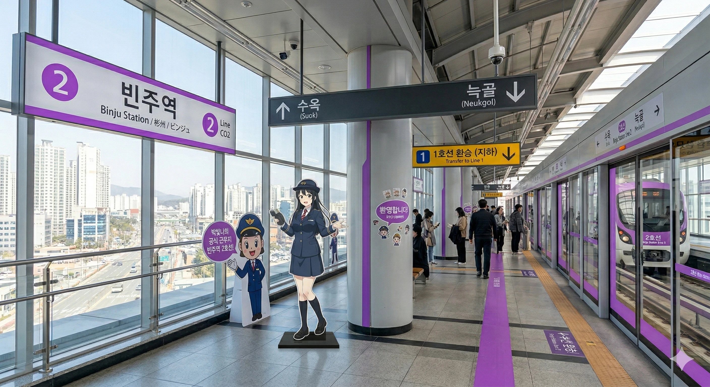
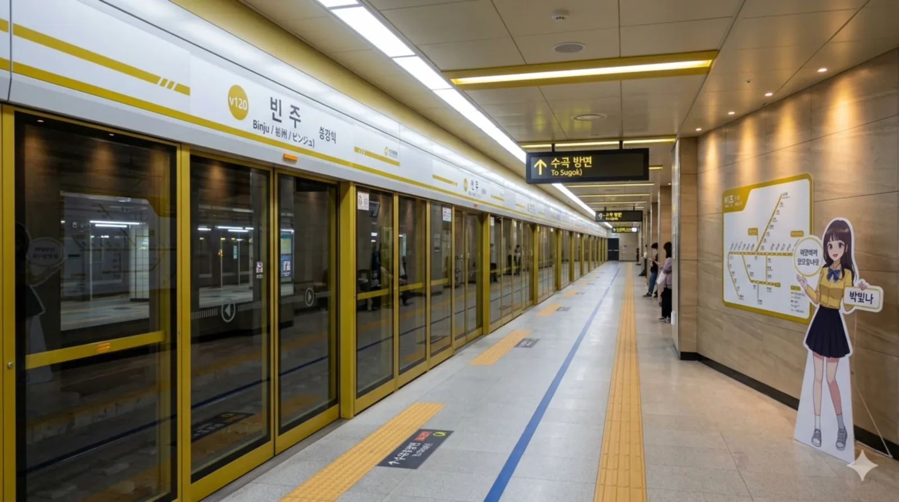

덕빈북도의 심장이자 빈주시 교통의 알파와 오메가. 그리고 초행길 방문객들의 영원한 무덤(...)
빈주시 빈성구 늑골동에 위치한 한국철도공사 및 빈주도시철도공사의 철도역이다. 덕빈북도청 소재지이자 인구 83만 명의 거대 생활권인 빈주시의 메인 관문 역할을 충실히 수행하고 있다.
빈효선, 덕빈선, 강빈선, 상빈선 등 무려 4개의 일반철도 노선과 빈효고속선(KTX/SRT)이 관통하며, 빈주권 광역전철, 빈주 도시철도 1호선, 그리고 2025년 최신 개통한 빈주 도시철도 2호선까지 모두 이 역에서 만나는 명실상부한 초거대 메가톤급 교통 허브이다. 전국 어디로든 뻗어 나갈 수 있는 막강한 환승 네트워크를 자랑한다. 덕분에 촌에서 갓 올라온 어르신들은 100% 확률로 길을 잃는다.
1928년 11월 일제강점기 시절 소규모 목조 역사로 개업한 이래, 약 100년에 가까운 시간 동안 빈주시의 근현대사를 함께해 온 뼈대 깊은 역이다. 현재의 구도심인 빈성구 중심부에 자리 잡고 있어 오랜 기간 상권의 핵으로 기능해왔다.
현재의 역사는 2014년 고속철도 개통을 앞두고 대규모로 증축된 이른바 '유리 궁전' 형태로, 웅장한 채광창과 현대적인 디자인이 돋보여 빈주시의 랜드마크로 자리매김했다. 유리 궁전 종특답게 여름에는 거대한 온실이 되고 겨울에는 대형 냉동창고가 되는 마법을 보여준다. 역 안팎으로는 시외버스터미널, 지하상가, 대형 백화점, 전통 시장이 거미줄처럼 얽혀 있어 명절이나 주말이 되면 수만 명의 인파로 발 디딜 틈이 없다. 명절 전날 지하 환승 통로는 사실상 좀비 아포칼립스 생존 게임 무대나 다름없다(...)
'빈주 공화국'이라 불릴 정도로 덕빈북도 내에서 압도적인 인프라를 독식하는 빈주시의 위상에 걸맞게, 역의 물리적 규모와 일일 이용객 수 모두 도내 압도적 1위이자 전국에서도 최상위권의 관리역(1급) 타이틀을 유지하고 있다.

지하, 지상, 고가까지 총 3개 층에 걸쳐 승강장이 입체적으로 미친 듯이 꼬여 배치되어 있다. 각 승강장을 연결하는 십자형(十) 대형 환승 통로가 층간을 이어주고 있으나, 노선이 워낙 많아 초행길인 경우 표지판을 1초라도 놓치면 자신이 어딘지 모르는 이세계로 빠지기 십상이다.

지상 1층에 자리한 메인 승강장으로, 거대한 4면 8선의 규모를 자랑한다. 고속철도와 무궁화호 등 모든 코레일 열차가 이곳에 정차한다. 플랫폼이 하도 넓어서 1번 승강장에서 8번 승강장까지 뛰어가다 보면 열차가 이미 떠나있는 기적을 볼 수 있다.
| 번호 | 노선 및 등급 | 행선지 |
|---|---|---|
| 1 · 2 | 빈주권 광역전철 | 여초·천남 방면 |
| 3 · 4 | 일반열차 (상행) |
천조·장기·풍은·계성 경유 서울·효빈(항)·상안 방면 |
| 5 · 6 | 빈효고속선 (KTX · SRT) |
계성 경유 서울·수서 방면 서해 방면 (종착) |
| 7 · 8 | 일반열차 (하행 / 시종착) |
송원오택·삽곡·복구·천조 경유 서해항·반양·우구·낙주(부산) 방면 |

지상 2층에 2면 2선의 상대식 승강장이 위치한다. 경전철(고가) 노선으로 빈주 시내를 시원하게 조망할 수 있으며, 맨 앞칸에 타면 놀이기구 타는 기분을 낼 수 있다. 지상 KTX 대합실과 구름다리로 직결되어 있어 타 노선 대비 환승 저항이 적은 편이다.

지하 2층에 2면 2선의 상대식 승강장이 위치한다. 역의 지하 심도가 상당히 깊은 편이라 에스컬레이터를 타고 한세월 내려가야 한다. 혹시 지구 내핵까지 뚫고 들어가는 건가 싶을 때쯤 플랫폼이 나온다(...)
도시철도 및 일반 열차의 환승 거점으로서 이용객이 매년 미친 듯이 증가하는 추세다. 특히 2025년 2호선이 개통되며 발생한 환승 파급 효과로 인해 역대 최고치의 승하차 수를 기록 중이다. 역무원들의 업무 피로도도 역대 최고치를 갱신 중이라고 한다.
| 연도 | KTX/SRT | 일반열차 | 광역/도시철도 | 총합 | 비고 |
|---|---|---|---|---|---|
| 2022년 | 9,800명 | 12,000명 | 39,000명 | 60,800명 | 거리두기 해제 효과 |
| 2023년 | 11,200명 | 13,500명 | 42,500명 | 67,200명 | 완전 회복세 |
| 2024년 | 12,500명 | 15,200명 | 48,000명 | 75,700명 | 덕빈북도 전체 1위 |
거대한 역사 규모만큼이나 역 주변의 연계 교통망이 도내 최고 수준으로 발달해 있다. 총 10개의 출구를 통해 다양한 교통 시설로 뻗어나갈 수 있다. 친구랑 약속 잡을 때 출구 번호 안 알려주면 영영 못 만날 수 있다.
역 동부 광장에 위치한 거대한 섬식 버스 환승센터. 덕빈북도 전역을 연결하는 수십 개의 노선이 정차한다.
| 광역/급행 | 800(급행), 900(좌석), 빈주-효빈 직행좌석버스 |
| 간선버스 | 100, 200, 300, 400, 500, 710, 720 |
| 지선/마을 | 빈성13, 빈성14, 빈성15, 가원07, 늑골01 |